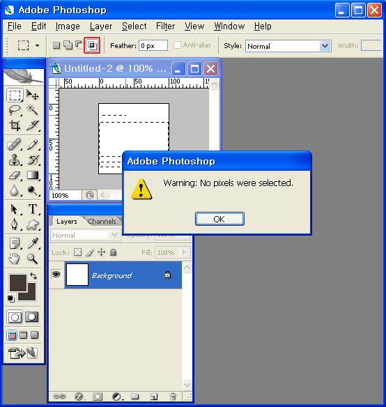

Идеи Джефа Раскина
Общий план <> частное

Идеи Джефа Раскина
model.states = {}
model.updateState('title', 'Jack')
'compx-fullName': [
['firstName', 'lastName'],
function(firstName, lastName) {
return firstName + ' ' + lastName
}
]
'compx-fullName': [
['firstName', 'lastName'],
function(firstName, lastName) {
return firstName + ' ' + lastName
}
]
'compx-fullName': [
['firstName', 'lastName'],
function(firstName, lastName) {
return firstName + ' ' + lastName
}
]
fullName: function () {
return this.get('firstName') + ' '
+ this.get('lastName');
}.property('firstName', 'lastName')
model.nestings = {}
model.updateNesting('bestFriend', tomModel)
'compx-isYoungest': [
['@age:friends', 'age'],
function(ages, age) {
return age < Math.min.apply(null, ages)
}
]
'compx-averageAge': [
['@age:friends.friends'],
function(ages) {
return ...
}
]
req_map: [[
['userid', 'country', 'age'], {
source: 'user', props_map: {
userid: 'name', country: null,
age: ['num', 'age'],
}},
['lfm', 'get', function() {
return ['user.getInfo', {'user': this.state('lfm_userid')}];
}]
]]
<span
pv-class="{{ selected && 'item-selected'}}"
pv-text="{{item_name}}"></span>
<span
pv-class="{{ selected && 'item-selected'}}"
pv-text="{{item_name}}"></span>
<span
pv-class="{{ selected && 'item-selected'}}"
pv-text="{{item_name}}"></span>
<span
pv-class="{{ selected && 'item-selected'}}"
pv-text="{{item_name}}"></span>